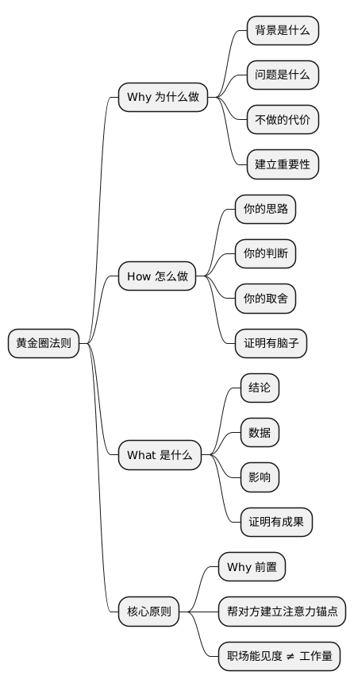

职场工具箱之黄金圈法则: 不是你不行，是你汇报方式错了
Posted on 一 19 1月 2026 in Life
| Abstract | 职场工具箱之黄金圈法则 |
|---|---|
| Authors | Walter Fan |
| Category | 职场方法论 |
| Status | v1.0 |
| Updated | 2026-01-19 |
| License | CC-BY-NC-ND 4.0 |
短大纲（给忙人）
展开看看
- **一句话**：不是你不行，是你汇报方式错了——先说 Why，再说 How，最后说 What - **黄金圈法则**：Why（为什么）→ How（怎么做）→ What（做什么） - **核心洞察**：大多数人从 What 开始说，高手从 Why 开始说 - **应用场景**：汇报、提案、面试、自我介绍——不是你不行，是你汇报方式错了
"People don't buy what you do; they buy why you do it." —— Simon Sinek
开篇：一个扎心的职场真相
这是几乎所有职场新人都会经历的一件事。
你每天都在忙：加班、改方案、修问题、回消息。你觉得自己已经够努力了。
但到了周会、月会、季度总结，你的存在感却低得可怕。
更扎心的是：有些人看起来也没你忙，却总能被领导点名表扬。
问题出在哪？
答案往往不是能力，而是——
你只在"做事"，却没在"解释价值"。
今天这篇文章，我想帮你解决一个问题：如何让你做的事被"看见"。
一、大多数新人汇报时，只做了一件事：说 What
新人最常见的汇报方式是这样的：
"我这周主要做了三件事：
- 修复了一个 Bug
- 优化了一个接口
- 跟进了一个需求"
你说得很认真，领导点点头，然后开始问别人。
你会觉得委屈："我明明干了这么多。"
但站在领导视角，他真正关心的是：
- 为什么要做这件事？（这 bug 不修会怎样？影响多少用户？）
- 你是怎么判断的？（你的思考过程是什么？）
- 做完后带来了什么变化？（数据呢？效果呢？）
而这些，你一个字都没说。
这就是普通人和高手的差距
| 普通人 | 高手 |
|---|---|
| 先说 What（我做了什么） | 先说 Why（为什么要做） |
| 堆砌事实 | 构建逻辑 |
| 让人点头 | 让人印象深刻 |
普通人的汇报像流水账：做了 A、做了 B、做了 C。
高手的汇报像故事：因为 X 问题，我做了 Y，带来了 Z 的改变。
二、一个改变命运的小工具：黄金圈法则（Why–How–What）
这个框架来自 Simon Sinek 的 TED 演讲《Start with Why》，点击量超过 6000 万次，是 TED 史上最受欢迎的演讲之一。
他的核心观点是：
伟大的领导者和品牌，都是从"Why"开始沟通的。
苹果不会说"我们做了一台电脑，配置很高，设计很美"（What → How）。
苹果说："我们相信挑战现状，我们相信不同凡想。我们的产品设计精美、使用简单——它恰好是一台电脑。"（Why → How → What）
这个逻辑同样适用于职场汇报。
黄金圈的三层结构
┌─────────────┐
│ WHY │ ← 你为什么做？（信念/目的/问题）
├─────────────┤
│ HOW │ ← 你怎么做的？（方法/思路/判断）
├─────────────┤
│ WHAT │ ← 结果是什么？（产出/数据/影响）
└─────────────┘
1️⃣ Why（为什么做）
- 背景是什么？ 这个问题是怎么来的？
- 问题是什么？ 痛点在哪？影响多大？
- 不做的代价是什么？ 放着不管会怎样？
Why 的作用：让对方理解"这件事值得被关注"。
2️⃣ How（你是怎么做的）
- 你的思路：你是怎么分析问题的？
- 你的判断：为什么选了方案 A 而不是方案 B？
- 你的取舍：你放弃了什么？承担了什么风险？
How 的作用：让对方看到"你有脑子"，不是瞎猫碰死耗子。
3️⃣ What（结果是什么）
- 结论：最终做了什么？
- 数据：可量化的变化是什么？
- 影响：对业务/团队/用户有什么正面效果？
What 的作用：让对方看到"你有成果"，不是光说不练。
三、对比一下：同一件事，两种说法
场景 1：修复 Bug
❌ 普通版（只说 What）：
"我修了一个登录接口的 bug。"
领导内心 OS："哦……所以呢？"
✅ 黄金圈版（Why → How → What）：
"上周客服收到 30+ 用户投诉说登录失败（Why：问题背景）。 我排查后发现是 token 过期时间配置错误，导致 iOS 用户二次登录必崩（How：分析过程）。 修复后，相关投诉归零，登录成功率从 94% 恢复到 99.5%（What：数据结果）。"
领导内心 OS："不错，这人有责任心，还会看数据。"
场景 2：优化接口
❌ 普通版：
"我优化了用户登录接口，把响应时间缩短了。"
领导内心 OS："缩短了多少？为什么要优化？"
✅ 黄金圈版：
"最近监控发现登录接口 P99 到 2.3s，影响首屏体验和转化率（Why）。 我分析后发现是鉴权链路做了三次数据库查询，于是合并为一次，并加了 Redis 缓存（How）。 最终登录耗时下降了 65%，P99 降到 800ms（What）。"
场景 3：写一份技术方案
❌ 普通版：
"这是我写的消息队列选型方案，请大家看看。"
然后贴一份 10 页 PPT。
✅ 黄金圈版：
"随着订单量上涨，目前的同步写库已经扛不住了，高峰期延迟超过 5 秒（Why）。 我对比了 Kafka、RocketMQ 和 Pulsar，从吞吐量、运维成本和团队熟悉度三个维度做了评估（How）。 结论是推荐 Kafka，理由如下……（What）。"
你发现了吗？
你干的事情没变，但"价值被看见了"。
四、为什么"Why"要放在最前面？
这是反直觉的。
大多数人习惯从 What 开始，因为"我先说结果，再解释原因"——这是我们从小写作文的思路。
但职场汇报不是作文。
职场汇报的核心目的是：让对方快速判断"这件事重要不重要"。
如果你上来就说"我修了一个 bug"，对方要等你说完才知道这 bug 重不重要。
如果你上来就说"上周客服收到 30+ 投诉"，对方立刻知道：这事儿重要，我得听下去。
Why 前置 = 帮对方建立"注意力锚点"。
这也是为什么好的新闻标题从来不是"今天发生了一件事"，而是"某某城市发生 6.5 级地震"——先告诉你这事儿多大，再讲细节。
五、黄金圈法则的其他应用场景
这个框架不只适用于周会汇报，几乎所有需要"说服别人"的场景都能用：
| 场景 | Why | How | What |
|---|---|---|---|
| 求助同事 | 我遇到了一个问题，自己排查了 2 小时没搞定 | 我已经试过 A、B、C 三种方法 | 想请你帮我看看 X 部分 |
| 申请资源 | 当前系统在高峰期扛不住了 | 我评估了两个方案，方案 A 成本更低 | 需要申请 2 台服务器 |
| 跨部门协作 | 用户投诉率在上升，影响续费 | 我们分析后发现是 XX 模块的问题 | 希望贵部门配合改进 |
| 面试回答 | 当时业务遇到了一个挑战 | 我是这样思考和行动的 | 最终带来了这样的结果 |
| 写简历 | 项目背景/业务痛点 | 我的职责/贡献 | 产出/数据/影响 |
六、常见误区
误区 1：Why 讲太久
Why 的目的是"建立重要性"，不是"交代所有背景"。
一两句话说清楚痛点就够了，别把领导当历史课听众。
误区 2：How 变成流水账
"我先做了 A，然后做了 B，再做了 C……"——这不是 How，这是 What 的变种。
How 要突出的是你的思考和判断，不是动作顺序。
误区 3：What 没有数据
"效果还不错"、"用户反馈比较好"——这种模糊的 What 等于没说。
能量化就量化，不能量化就具体化（"3 个用户反馈比之前好用"比"用户反馈比较好"强）。
七、一个给新人的小练习（5 分钟就够）
回想你最近一次汇报的事情，按下面这个模板重写：
因为【Why：背景/问题/不做的代价】，
我采用了【How：你的思路/判断/方法】，
最终带来了【What：结果/数据/影响】。
示例：
因为 本周上线后频繁出现 OOM，影响了 3 次生产环境稳定性， 我通过 dump 分析定位到是缓存未设上限，并加了 LRU 淘汰策略， 最终 内存占用从 80% 降到 40%，本周未再出现 OOM。
哪怕你只在周会里多说一句 Why，别人对你的评价都会不一样。
总结
| 核心观点 | 说明 |
|---|---|
| 职场能见度 ≠ 工作量 | 干得多不如"说得对" |
| 普通人先说 What | 堆砌事实，让人无感 |
| 高手先说 Why | 建立重要性，让人关注 |
| 黄金圈法则 | Why → How → What |
| Why 的作用 | 让对方知道"这事儿重要" |
| How 的作用 | 让对方看到"你有脑子" |
| What 的作用 | 让对方看到"你有成果" |
Checklist：下次汇报前的自检清单
- [ ] 我有没有先说"为什么做"（Why）？
- [ ] 我有没有讲清楚"我的思路/判断"（How）？
- [ ] 我的结果有没有数据支撑（What）？
- [ ] 我能不能用一句话概括这件事的价值？
- [ ] 如果领导只听 30 秒，他能记住什么？
这一篇你真正要记住的只有一句话
领导不是不认可你，是他不知道你为什么重要。
先说 Why，让他知道。
扩展阅读
- Simon Sinek: Start with Why (TED 演讲) — 黄金圈法则的原始出处
- 《从"为什么"开始》 — Simon Sinek 的同名书籍
- 金字塔原理 — 另一个经典的结构化表达框架
- STAR 法则 — 面试中常用的回答结构
@startmindmap
* 黄金圈法则
** Why 为什么做
*** 背景是什么
*** 问题是什么
*** 不做的代价
*** 建立重要性
** How 怎么做
*** 你的思路
*** 你的判断
*** 你的取舍
*** 证明有脑子
** What 是什么
*** 结论
*** 数据
*** 影响
*** 证明有成果
** 核心原则
*** Why 前置
*** 帮对方建立注意力锚点
*** 职场能见度 ≠ 工作量
@endmindmap

系列回顾
- 4D 总结法
- 黄金圈法则（本篇）
- TNB 表达模型
- FAB 提案法
- STAR 面试法
- 同理心三方法
- 5W1H + 8C1D
- 艾森豪威尔矩阵
- PDCA 循环
- SMART 原则
- 领导力
- 逻辑树
- 解决问题五步法
- 5 个 Why
- 沟通四要素 CARE
- 金字塔原理
- 三点法
- DACI
- 四线复盘法
- RAPID
- 5S 问题处理法
- SWOT 自我定位
- AARRR 漏斗
- 第一性原理
- RACI
- 非暴力沟通
- SCAMPER
- MVP 思维
- ABC 情绪理论
- AI Agent 学职场英语
- 向上管理
- OODA 循环
本作品采用知识共享署名-非商业性使用-禁止演绎 4.0 国际许可协议进行许可。